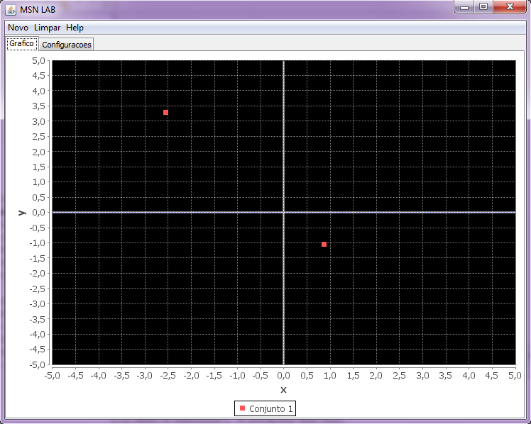
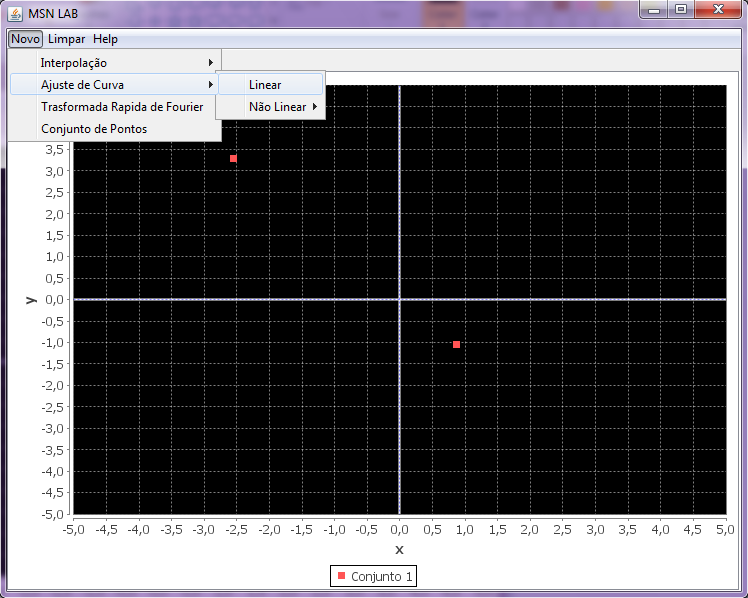
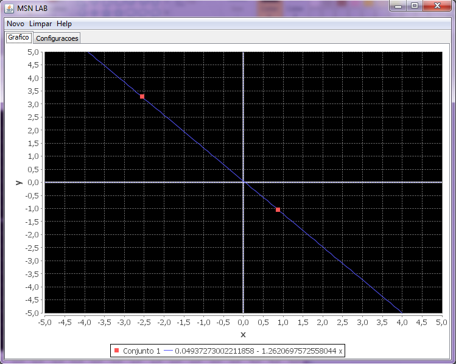

Ajuste de Curva Linear
Para utilizar o metodo de ajuste de curva linear temos que:
- Escolher um conjunto de pontos no qual iremos aplicar:

- Clicar em Menu Novo -> Ajuste de Curva -> Linear

- Em seguida, podemos ver o gráfico da
seguinte maneira:
